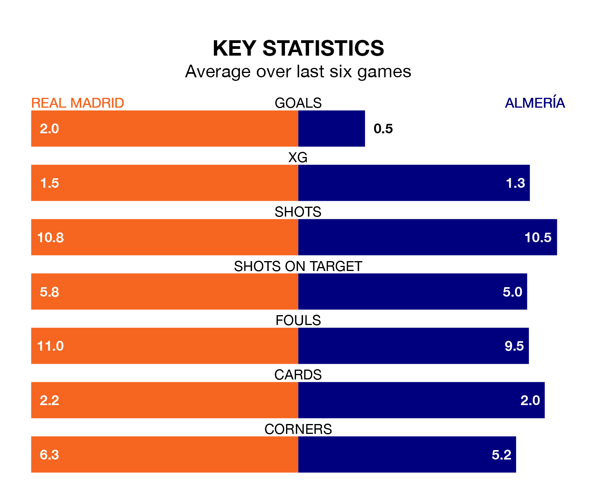

Mid-season relegation candidates Almería face a challenge away against high-flying Real Madrid at the Estadio Santiago Bernabéu on Sunday.
Almería are rooted to the bottom of the La Liga table, and have picked up no wins and six draws in their 20 games to date.
Madrid, meanwhile, are second in the standings with 48 points, having won 15 and drawn three of their first 19 matches, and are one point behind table-toppers Girona FC.
With 40 goals in 19 games so far this season, Madrid are the league's second-highest scorers with 2.1 goals per game. And they are conceding fewer than average, letting in 11 goals at a rate of 0.6 per game.
Almería, meanwhile, are below average scorers, with 0.9 goals per game, compared to a league average of 1.3. They have conceded 2.1 goals per game.
In Jude Bellingham, the home team have the league's sharpest shooter so far this season. He has notched 13 goals in 17 appearances.
His goal rate of one every 113 minutes is much quicker than that of Sergio Arribas, the visitors' top scorer with a goal every 267 minutes, and a total of five goals in 20 games.
Madrid are in fantastic form in La Liga, with five wins and a draw from their last six games.
With no wins and three draws over that period, Almería's form is much worse – they have taken three points from 18, compared to Madrid's 16.
In the last 10 years, Madrid and Almería have played each other on six occasions. Madrid won all of them.
On average, Madrid scored 3.3 goals and Almería 0.8 in those matches.
Their last meeting was on August 19, when Madrid won 3-1 away.
Madrid's last match was on January 3, a 1-0 win against RCD Mallorca, with Antonio Rüdiger getting the goal for Madrid.
Almería drew 0-0 with Girona last time out, on January 14.
Updated: 13:09 (UTC), 17/01/24